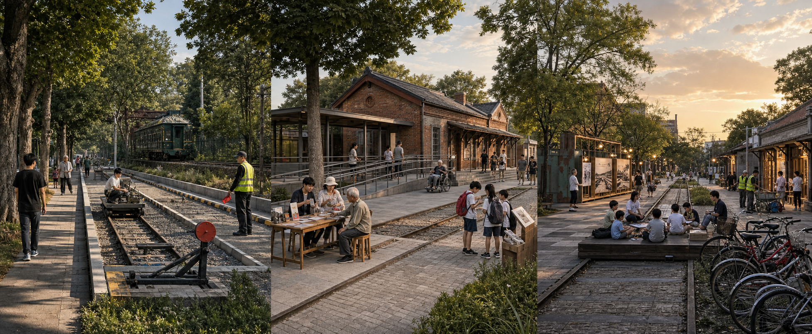

低速试验院
普通步道从围合测试条带旁经过。入口有人值守，手动停机点在现场可见。

遗址公园穿过九个街镇，约六公里高铁入地释放了地面。
一条公共脊经过三座院落，六类小庭补足树荫、雨水和停留。
小样先用起来，复测以后再决定留下、修改或撤掉。
公开资料能确认公园建设、已批连接和文保要求。OSM 补上道路、水系与站点背景。暂定边界保持虚线，重要路口留给现场复核。

底图 © OpenStreetMap contributors ODbL 1.0 仅作现状语境
整条走廊横向展开，北、中、南各自放大。用地回到道路和街坊里，慢行线也能看见从哪里出发、在哪个路口断开。


众智园收住低速测试，AI 原点让公共服务有人接手，大钟寺把站、街和公园接到一起。三张平面采用同一比例尺，下面紧跟人的剖面。

普通步道从围合测试条带旁经过。入口有人值守，手动停机点在现场可见。
无障碍坡道接到服务桌。旧站房周边只放低矮、可撤的设施。
家具活动结束后归库。夜间时段跟着居民反馈调整。
这张图帮助理解三处院落的尺度和气氛。它不代表现状，也不替代平面、剖面和文保核验。

早上先看路，中午有人办事，傍晚留给散步和照护。围合测试放到夜间，现场人员掌握停机权。

断网时固定导视仍然可用。
错误答复马上交给工作人员。
树荫、座位和厕所先满足。
设备越界，测试当天结束。
高校带来研究问题，社区提出日常麻烦。运营人员记录维护成本，水务和文保部门核验各自边界。

棚、座椅、雨庭和服务桌都能单件维修。测试边界与呼叫柱保留人工响应，九个项目回到沿线位置。

官方页面说明项目状态，OSM 提供现状语境，GeoJSON 用来比较方案和复算工作面积。法定控制继续待核。

把一张长线拆成可以核对的图纸，正文、附件与复核状态在这里对应。